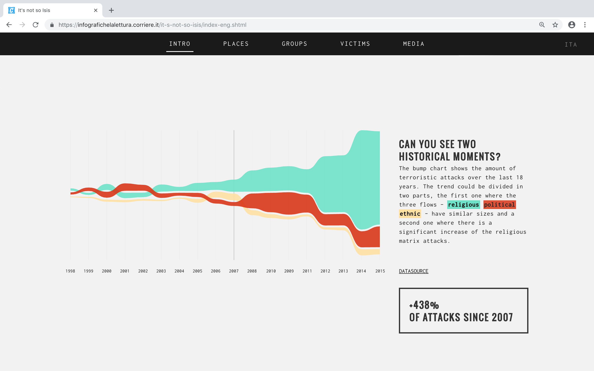

Information Design
Web Design
UX/UI
It's not so Isis
The complex shape of terrorism with its ideological vertices,
illustrated through data.
In the 2016/2017 edition of the Final Synthesis Studio at Density Design Lab we were asked to use information visualization, both as an analytical and a communicative tool, to observe, understand, shape and communicate complex phenomena.
In the first part of the course, we had to find and collect data from official sources, so we could get a first grasp of the depth and complexity of these issues. The result is a series of visualizations that represented a general overview of the topic, seen with the eyes of the “official” sources.

In order to analyse the primary version of terrorism, the one provided by data, we merged together two different datasets from START consortium: the GTD and BAAD2. We selected 120 terroristic groups and analysed their activities throughout 18 years - from 1998 to 2015 - in order to display a clear picture of the terrorist attacks evolution over time and by the sources.
